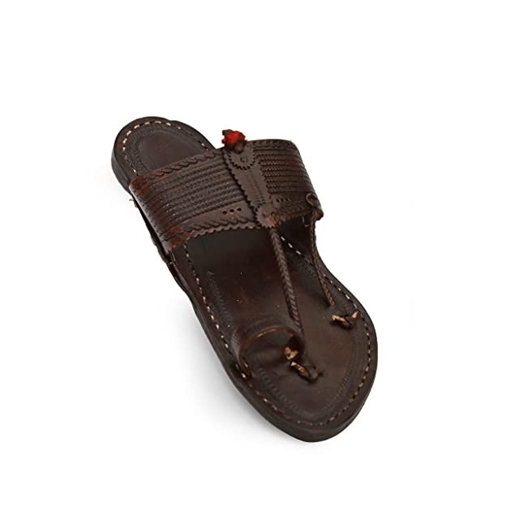
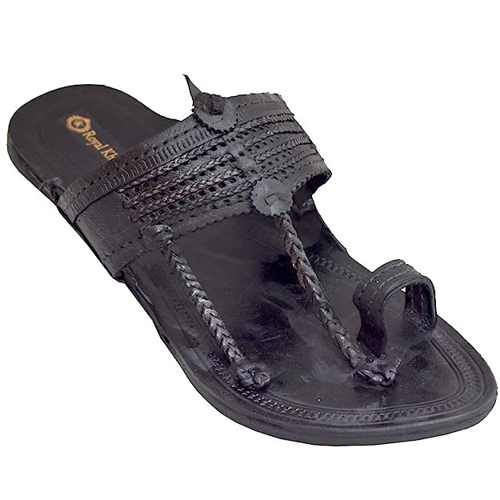

The origin of Kolhapuri Chappals dates back to 12th century when the King Bijjala and his prime minister Basavanna encouraged Kolhapuri Chappal production to support local cobblers. According to historic records, Kolhapuris were first worn as early as the 13th century. Previously known as Kapashi, Paytaan, Kachkadi, Bakkalnali, and Pukri, the name indicated the village where they were made. Shahu I of Kolhapur (and his successor Rajaram III) encouraged Kolhapuri Chappal industry and 29 tanning centres were opened during his rule
It can take up to six weeks to make a pair of Kolhapuris.Originally made from buffalo-hide and thread, they weighed as much as 2.01 kilos because of the thickness of the sole, which made them durable despite the extreme heat and mountainous terrain found in the state of Maharashtra. For making Kolhapuri Chappal various operations are done step by step like skiving, pattern making and cutting, attachment of upper and bottom heels, stitching, finishing, punching and Trimming, decoration and Polishing, and assembling. Kolhapuri chappals are known to last a lifetime if maintained well and not used in rainy seasons. In 2020, the total business market was estimated at around ₹9 crore, with over 10,000 artisans working in Kolhapur. Of the total six lakh pairs produced annually, 30% were exported.[8] The designs have moved from the ethnic to ones with more utilitarian value and materials from primal hard materials to softer and more comfortable to wear materials. The artisans themselves designed ethnic patterns and sold, but today the traders and businessmen with demand for cheap products drive the requirement of minimalist designs. In recent decades, the business has struggled for survival with market decline, low profits, irregular leather supply, duplicates & fakes, environmental regulations on tanneries, cow slaughter ban, among other issues

